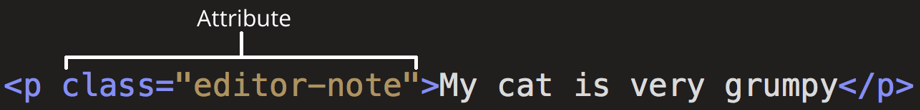

Ikonos Bootstrap
Tag'ų sąrašas
Tag'ų sąrašas
- html - talpina visą svetainės kodą
- head - talpina informaciją apie svetainę
- body - talpina svetainės atvaizduojamą turinį
- meta - nurodo svetainės meta informacija
- link - prijungtia CSS failą
- script - prijungia JS failą
- title - puslapio tab'o pavadinimas
- p - paragraph - rašyti teksto turinį
- ul - unordered list - sukuria nerikiuotą sąrašą
- ol - ordered list - sukuria rikiuotą sąrašą
- li - list item - sąrašo elementas su turiniu
- h1-h6 - heading size - rašyti pavadinimą
- img - image - atvaizduoti paveiksliuką
- a - anchor - nuoroda

Atributų sąrašas
- charset - meta tag'o viduje nurodo kokią simbolių biblioteką puslapis naudoja
- rel - relation - nurodo link tag'o pagalba prijungiamo failo santykį
- href - hyperlink reference - kelias iki failo arba nuorodos link'as, kurį norima prijungti prie HTML'o
- src - source - kelias iki failo arba failo esančio internete nuoroda, kurį norima prijungti prie HTML'o
- alt - alternative text - tekstas, kuris atvaizduojamas paveiksliuko neužkrovimo atveju

Klaviatūros trumpinių sąrašas
- CTRL C - kopijuoja pažymėtą turinį
- CTRL V - įklijuoja nukopijuotą/iškirptą turinį
- CTRL S - išsaugoja failą
- CTRL A - pažymi viską
- ALT TAB - vaikščiojimas tarp atidarytų programų
- CTRL O - atidaryti failą kodo editinimo programoje
- CTRL X - iškerpa pažymėtą turinį
- CTRL Z - atšaukia paskutinį veiksmą/veiksmus
- CTRL Y / CTRL SHIFT Z - atšaukia tavo veiksmų atšaukimą
- ALT SHIFT S - snipping tool
- F12 / CTRL SHIFT I - atidaro developer tools naršyklėje
- CTRL SHIFT C (naršyklėje) - leidžia su pele pasirinkti puslapio elementą ir jį atidaryti dev tools'uose
- ...
- ...
- ...